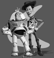
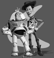

IIT6028 HA#3 Computational Photography
Implement poisson blending
1. TOY PROBLEM
Compute the x and y gradient of an image, and reconstruct it.
Using DO_TOY parts in starter function.
I refer to the given "Hints and Information".
So I use im2var variable to performed the mapping between pixel and variable number.
And to save memory, I use sparse to initialize preallocate large variables, A.
%%%% maps each pixel to a variable number im2var = zeros(imh, imw); im2var(1:imh*imw) = 1: imh*imw; %%%% Initialize A = sparse(imh*(imw-1) + imw*(imh-1) + 1, imh*imw); b = zeros(imh*imw, nn); e = 0;
Then I calculate the difference between the gradients of v and the gradients of s.
In Equation(2), we calculate the difference between the x-gradients of v and the x-gradients of s.
%%%% Equation(2)
for y = 1:imh
for x = 1:imw-1
e = e+1;
A(e, im2var(y,x+1)) = 1;
A(e, im2var(y,x)) = -1;
b(e) = toyim(y,x+1) - toyim(y,x);
end
end
In Equation(3), we calculate the difference between the y-gradients of v and the y-gradients of s.
%%%% Equation(3)
for x = 1:imw
for y = 1:imh-1
e = e+1;
A(e, im2var(y+1,x)) = 1;
A(e, im2var(y,x)) = -1;
b(e) = toyim(y+1,x) - toyim(y,x);
end
end
And we minimize the difference between the colors of the top left corners of the two images in Equation(4).
Then reconstruct it using \ function in matlab, and make that vector to image using reshape function.
%%%% Equation(4) e = e+1; A(e, im2var(1,1)) = 1; b(e) = toyim(1,1); %%%% reconstruct image v = A \ b; im_out = reshape(v, [imh, imw]);
Following images are results TOY PROBLEM.
We can see reconstructed image match the original one, so this process works correctly.
 

[1 2] 1: original image / 2: reconstructed image
Error calculated by starter function is 0+2.8851e-06i, so we can check they are almost same.
2. POISSON BLENDING
Formulate and solve the blending constraints.
First, I used getMask, mask2chain, and alignSource functions in given ./src folder, to Select the boundaries of a region in the source image and specify a location in the target image where it should be blended.
After that, we should formulate and solve the blending constraints expressed in Equation (1).
I used laplacian filter to implement it.
%%%% Laplace filter
for y = 1:imh
for x = 1:imw
e = e+1;
if mask_s(y,x) == 1
A(e, im2var(y,x)) = 4;
A(e, im2var(y,x-1)) = -1;
A(e, im2var(y,x+1)) = -1;
A(e, im2var(y-1,x)) = -1;
A(e, im2var(y+1,x)) = -1;
b(e,:) = 4*im_s(y,x,:) - im_s(y,x+1,:) - im_s(y,x-1,:) - im_s(y-1,x,:) - im_s(y+1,x,:);
else
A(e, im2var(y,x)) = 1;
b(e,:) = im_background(y,x,:);
end
end
end
After this process, I applied image reconstructing process which implemented in TOY PROBLEM.
In following image, we can compare simple aligned image and blended image by poisson blending.
[1 2] 1: aligned image / 2: blended image
We can simply check difference between two images. Last one is much better than first one.
3. BLENDING WITH MIXED GRADIENTS
Use the gradient in source or target with the larger magnitude as the guide, rather than the source gradient.
In this step, We have to use the gradient in source or target with the larger magnitude as the guide, rather than the source gradient.
We have to calculate gradient for 4 ways(up, down, left, right), so I implemented applyGradient function to simplify it.
function b = applyGradient(im_s, im_background, b, x, y, e, x_, y_)
[~, ~, nn] = size(im_s);
grad_s = zeros(1, nn);
grad_t = zeros(1, nn);
for c = 1:nn
grad_s(1,c) = im_s(y,x,c) - im_s(y+y_,x+x_,c);
grad_t(1,c) = im_background(y,x,c) - im_background(y+y_,x+x_,c);
end
if abs(grad_s(1,:)) >= abs(grad_t(1,:))
b(e, :) = b(e, :) + grad_s(1, :);
else
b(e, :) = b(e, :) + grad_t(1, :);
end
end
In this function, we calculate grad_s and grad_t for every color channels, and compare their absolute value, and use bigger one.
And then I applied applyGradient to every 4 ways.
%%%% Laplace filter
for y = 1:imh
for x = 1:imw
e = e+1;
if mask_s(y,x) == 1
A(e, im2var(y,x)) = 4;
A(e, im2var(y,x-1)) = -1;
A(e, im2var(y,x+1)) = -1;
A(e, im2var(y-1,x)) = -1;
A(e, im2var(y+1,x)) = -1;
b = applyGradient(im_s, im_background, b, x, y, e, 0, 1);
b = applyGradient(im_s, im_background, b, x, y, e, 0, -1);
b = applyGradient(im_s, im_background, b, x, y, e, 1, 0);
b = applyGradient(im_s, im_background, b, x, y, e, -1, 0);
else
A(e, im2var(y,x)) = 1;
b(e, :) = im_background(y,x,:);
end
end
end
In following images, we can check gradient mixed image, which is result of this process.
Aligned image is same with upper image, so we can compare blended image and gradient mixed image.
[1 2] 1: aligned image / 2: gradient mixed image
We can check gradient mixed image seems more transparent than blended image, because we mixed its gradient.
4. YOUR OWN EXAMPLES
(1) mixed-better case
[1 2 / 3 4] 1: target image / 2: aligned image / 3: blended image / 4: mixed image
If target image is text, we have to remove background of it, so gradient mixed image is better than just blended image.
We can check border of mixed image is more natural than blended image.
(2) blend-better case

[1 2 / 3 4] 1: target image / 2: aligned image / 3: blended image / 4: mixed image
If target image is object, gradient mixed image looks transparent. So for many case, blended image is much better than mixed image.
As given results, target image - chick - looks much transparent in mixed image, and it looks not natural.
(3) bad case

[1 2 / 3 4] 1: target image / 2: aligned image / 3: blended image / 4: mixed image
If mask of target image has fickle background, this method cannot erase it perfectly.
So both blended image and mixed image looks not natural.
(4) bonus case
[1 2 / 3 4] 1: target image / 2: aligned image / 3: blended image / 4: mixed image
Gradient mixed method successfully erase background texture of text image.
So we can figure out results of mixed image is very natural.
You can check full matlab codes in GitHub Repo.
Copyright 2018. PJunhyuk. All rights reserved.